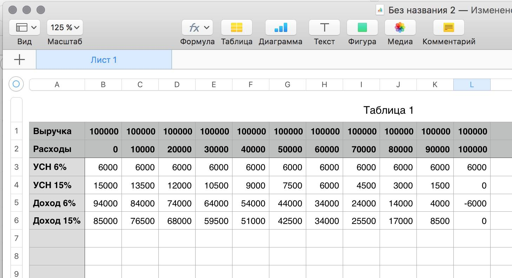

Если вы собираетесь заниматься чем-то вроде малого бизнеса, секс-шоп, или её что, то эта табличка поможет вам выбрать тип упрощённой системы налогообложения.
Их в России сейчас 2. Можно платить 6% от выручки, или 15% от дохода.

Из таблички видно, что платить с выручки становится выгодным, если ваши затраты составляют больше 60% от выручки.
Правда, нужно помнить, что, во-первых, к расходам налоговая принимает далеко не все действительные расходы, во-вторых, будет использовать любой повод, чтобы доказать, что вы их неправомерно увеличиваете. Налогообложение с прибыли (доходы минус расходы) потенциально гораздо более проблемно и в связи с необходимостью более строгого учёта.